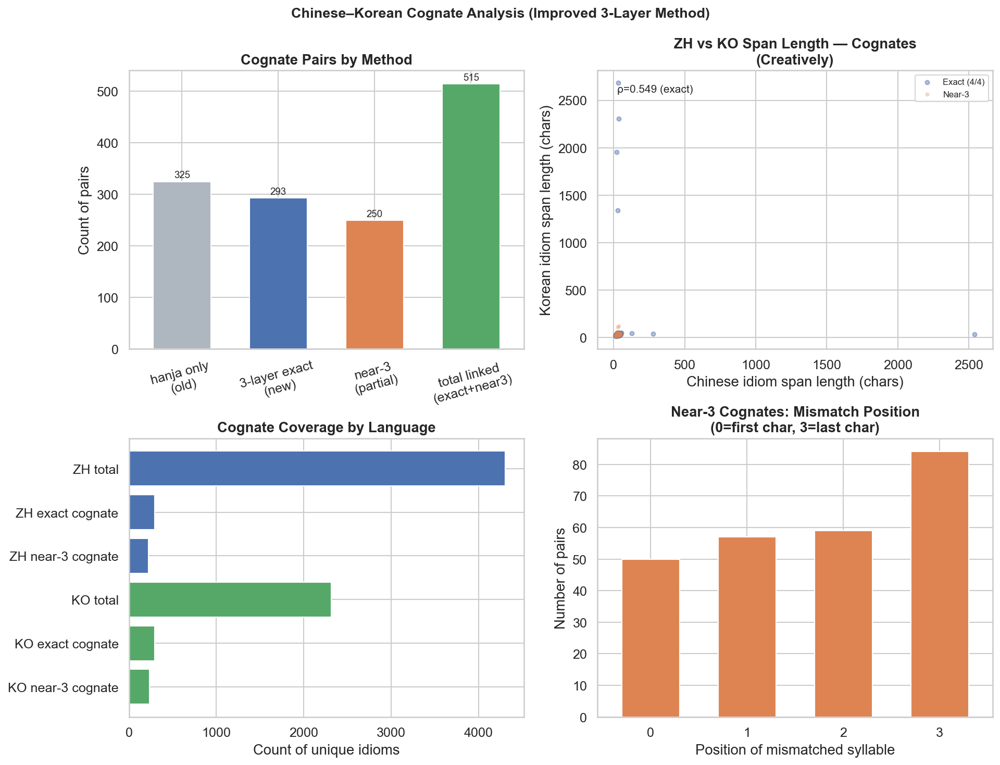
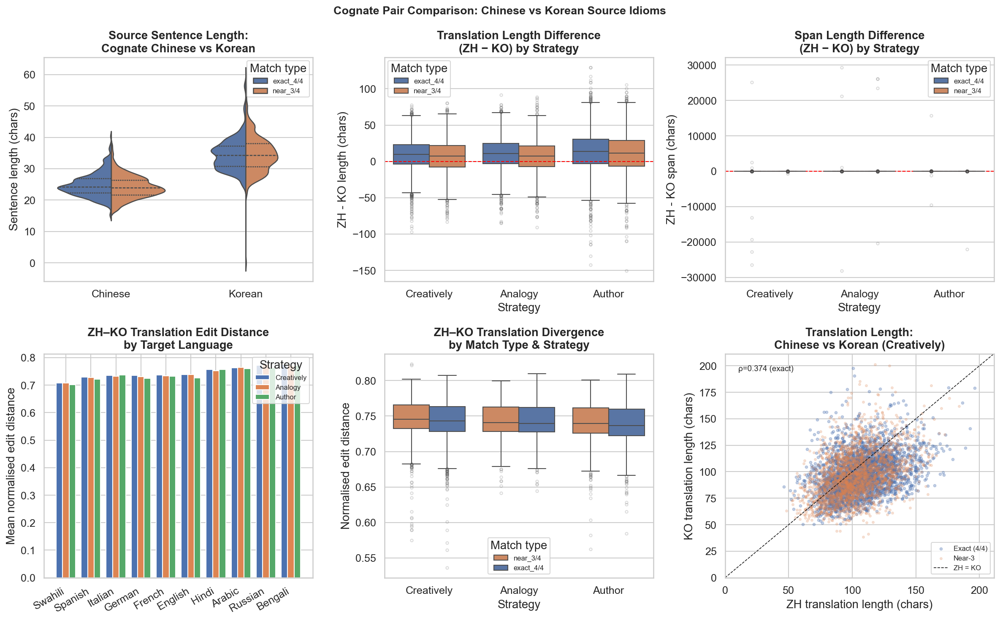
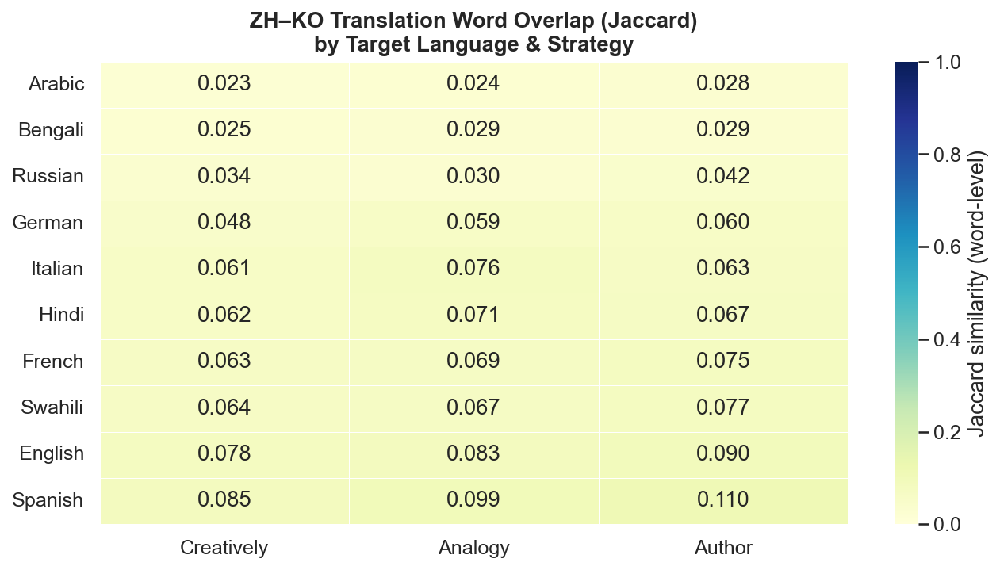
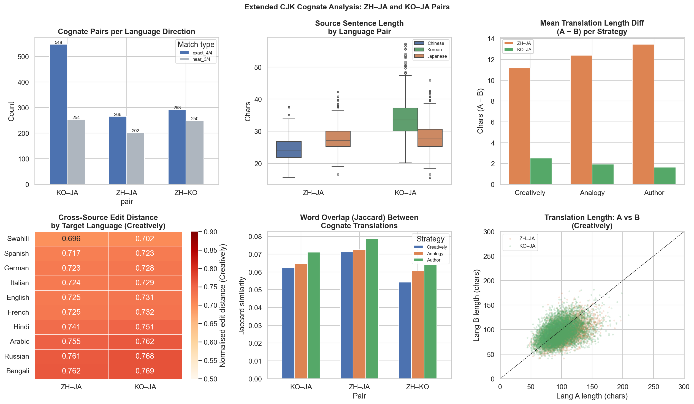

Part 5: Cross-Source Cognate Analysis¶
Parts 3 and 4 treat each source language independently. A more nuanced question is: when the same underlying idiom appears in multiple source languages (as Sino-Korean and Sino-Japanese cognates), do translations converge or remain divergent? This tests whether source language context — the surrounding prose, the script, the cultural framing — shapes the translation independently of the idiom's meaning.
ZH–KO Cognate Identification¶
Chinese simplified idioms are transliterated to predicted
Korean Hangul using a three-layer pipeline: (1) Unihan kHangul (authoritative Unicode
per-codepoint readings), (2) OpenCC simplified→traditional conversion for characters absent
from kHangul, (3) hanja library as final fallback. Matching uses two tiers: exact (4/4)
and near-3 (3/4 character positions).
| Method | Exact pairs | Near-3 pairs | Total | % of Chinese |
|---|---|---|---|---|
hanja only (old) |
325 | — | 325 | 7.5% |
| 3-layer + near-3 (new) | 293 | 250 | 543 | ~12% |
- 293 exact cognates (6.8% of Chinese / 12.7% of Korean). Examples: 狐假虎威 ↔ 호가호위, 束手无策 ↔ 속수무책.
- 250 near-3 pairs — many mismatches are phonologically systematic, explained by Korean's 두음법칙 (Initial Sound Law): initial ㄹ shifts to ㅇ/ㄴ (e.g. 流言蜚語 → 류언비어 vs 유언비어 in standard Korean). Mismatch position is roughly uniform across all 4 character positions, indicating no structural bias.
- Span lengths correlate moderately across source languages (exact: ρ = 0.48–0.55; near-3: ρ = 0.38–0.53), confirming shared underlying meaning produces similarly-sized renderings.

Cognate Pair Comparison: ZH–KO¶
For each of the 543 cognate pairs (293 exact + 250 near-3), rows were aligned by target language and compared directly (divergence metrics averaged over all 10×10 sentence pairs per cell). Results cover 5,430 aligned observations.
Source sentence length:
| Language | Mean sentence length |
|---|---|
| Chinese | 24.6 chars |
| Korean | 34.6 chars |
Korean source sentences are 10 chars longer despite encoding the same idiom. Korean Hangul encodes each CJK syllable as one block but requires additional grammatical particles and postpositions absent from Chinese, producing longer prose contexts.
Translation length — Chinese produces longer translations despite shorter sentences:
| Strategy | ZH mean | KO mean | ZH − KO | p |
|---|---|---|---|---|
| Creatively | 105.2 | 97.3 | +7.9 | 4.8×10⁻¹⁵² |
| Analogy | 127.8 | 118.8 | +8.9 | 1.8×10⁻¹⁷⁵ |
| Author | 131.6 | 119.4 | +12.2 | 2.2×10⁻²¹⁷ |
Chinese-sourced idioms produce 8–12 chars longer translations across all strategies and all target languages. The effect is larger for exact cognates (+9.5) than near-3 pairs (+6.2). Sentence length difference strongly predicts translation length difference (Spearman ρ = 0.73–0.80): the longer Korean context directly drives the model to produce shorter explanatory translations — the model uses context as a substitute for explanation.
Span length reverses by strategy:
| Strategy | ZH span | KO span | Difference |
|---|---|---|---|
| Creatively | 33.3 | 43.9 | KO spans +10.7 longer |
| Analogy | 67.5 | 55.5 | ZH spans +12.0 longer |
| Author | 38.2 | 41.3 | ~equal (p = 0.41) |
The reversal between strategies suggests each exploits a different aspect of the culturally distinct source context. Creatively leans into Korean's richer prose to elaborate the span; Analogy draws on Chinese's more compact Hanja framing to construct a longer analogy.
Cross-source divergence:
| Strategy | Edit distance | Jaccard (word overlap) |
|---|---|---|
| Creatively | 0.745 | 0.054 |
| Analogy | 0.743 | 0.061 |
| Author | 0.740 | 0.064 |
Even for exact cognates, ZH and KO translations of the same idiom into the same target language share only 5–6% word overlap and have edit distance ~0.74 — comparable to the cross-strategy divergence within a single source language (0.57–0.65, see Strategy Divergence above). Source language context shapes translation as strongly as strategy choice does.
The idiom 狐假虎威 / 호가호위 ("fox borrows the tiger's authority") illustrates this concretely. The Chinese source sentence describes a colleague exploiting the boss's authority, and the Creatively translation renders this as "rides the boss's coattails to play the big shot." The Korean source describes a friend's impressive new home, and produces "a palace built on borrowed glory." Same underlying idiom, same target language, same strategy — yet the translations share almost no words. The different source contexts not only change the vocabulary but shift the entire framing: one is a workplace critique, the other an architectural metaphor.


Extended Cognate Analysis: ZH–JA and KO–JA¶
The same analysis extended to ZH–JA and KO–JA.
ZH–JA matching (OpenCC s2t normalisation of both simplified Chinese and Japanese shinjitai to traditional Chinese, then exact and near-3 comparison):
| Match type | Pairs | Note |
|---|---|---|
| Exact — trivial duplicates | 113 | Same raw string in both dictionaries (see Data Edge Cases) |
| Exact — genuine cognates | 153 | Different raw forms, identical after s2t normalisation |
| Near-3 | 202 | 3 of 4 characters match after normalisation |
| Total linguistic pairs | 355 | Excluding the 113 trivial duplicates |
KO–JA matching (Unihan kHangul transliteration of Japanese kanji → predicted Korean, then exact and near-3 match against Korean saseong-eoro): 548 exact + 254 near-3 = 802 total.
Translation length hierarchy — ZH > KO > JA, consistent across all three pairings:
| Pair | Creatively diff | Analogy diff | Author diff | p |
|---|---|---|---|---|
| ZH − JA | +11.2 | +12.4 | +13.5 | < 10⁻²⁸⁰ |
| KO − JA | +2.5 | +1.9 | +1.6 | < 10⁻⁶ |
| ZH − KO (from above) | +7.9 | +8.9 | +12.2 | < 10⁻¹⁵⁰ |
The ZH–KO gaps above are approximately reproduced by the difference of the ZH–JA and KO–JA gaps (e.g. Creatively: 11.2 − 2.5 = 8.7 ≈ 7.9), confirming the hierarchy is transitive and not an artefact of pair selection.
Cross-source divergence is uniform across directions:
| Pair | Edit distance | Jaccard (Creatively) |
|---|---|---|
| ZH–JA | 0.733 | 0.071 |
| KO–JA | 0.740 | 0.062 |
| ZH–KO | 0.745 | 0.054 |
All three pairs yield nearly identical edit distances (~0.73–0.74), reinforcing the conclusion that source-language context produces translation divergence comparable to strategy-level divergence. ZH–JA shows marginally higher word overlap (0.071 vs 0.054 for ZH–KO), consistent with Chinese and Japanese sharing more literary and scriptural vocabulary than Chinese and Korean.
Two examples illustrate both the convergence and the divergence across source languages. The ZH–JA genuine cognate 精明强干 (ZH, simplified) / 精明強幹 (JA, traditional form) — "sharp-witted and capable" — produces near-identical English Creatively translations: "a sharp-witted powerhouse in the business world" (Chinese source) vs "a sharp-witted powerhouse in the business world" (Japanese source). Here the cognate relationship is so close, and the meaning so transparent, that the source language barely matters. The KO–JA cognate 전광석화 (KO) / 電光石火 (JA) — "lightning flash and spark from a struck stone," meaning instantaneous speed — produces more divergent renderings: Korean yields "her answer struck like a bolt of lightning" (grounding the metaphor in a direct English equivalent), while Japanese yields "his movements were a jagged streak of lightning" (a more visual elaboration). The sentence contexts differ — Korean describes a swift verbal response, Japanese describes physical movement — and the translations reflect that contextual difference despite the idiom being identical in meaning and nearly identical in form.
